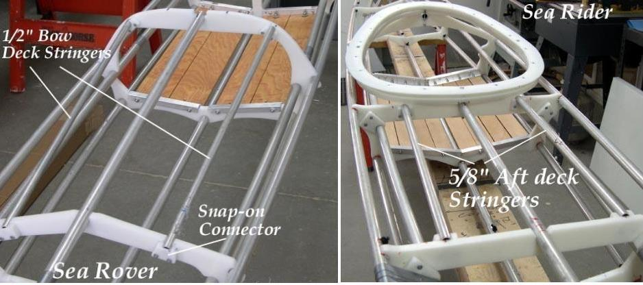

| Deck Stringers (Optional) | Menu Previous Page Next Page |
|
 The Sea Rover has a rounded cross section 4 (Masik) and uses additional forward (1/2") and aft (5/8") deck stringers. HDPE Snap-on connectors are used to secure the stringers. The Sea Ranger / Sea Rider / Sea Raider have a different shape cross section 4 with no additional forward deck stringers. All use 1/2" or 5/8" aft deck (layback) stringers. Stringers are placed 5" each side of the 3/4" deckridge. Aditional fore and aft deck stringers can be used on any of the kayaks in this manual. |
|